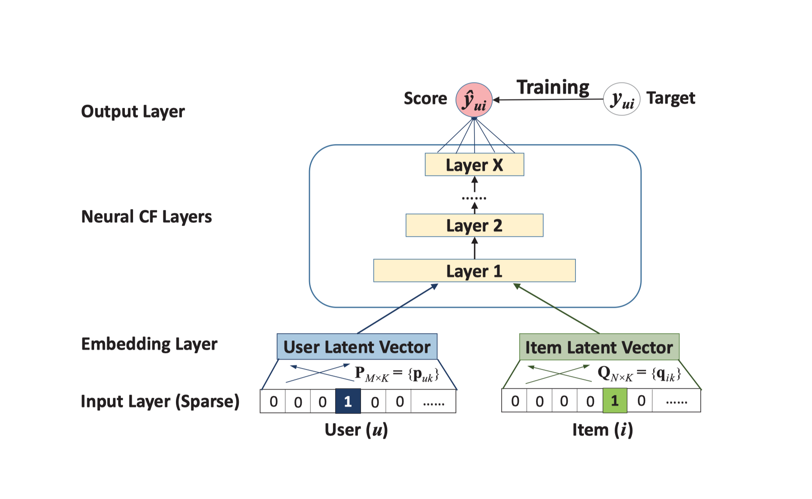

Neural Collaborative Filtering (NCF) is a fairly new approach to recommender systems proposed by He et al. It is aimed at tackling the problem of collaborative filtering, such as the Netflix problem which is about predicting users’ ratings for films they haven’t yet seen based on what they have seen before.

While most work in this field in the past has employed classical matrix factorisation approaches, the idea of NCF is to replace this by one or more neural layers:
By replacing the inner product with a neural architecture that can learn an arbitrary function from data, we present a general framework named NCF, short for Neural network-based Collaborative Filtering. NCF is generic and can express and generalize matrix factorisation under its framework. To supercharge NCF modelling with non-linearities, we propose to leverage a multi-layer perceptron to learn the user-item interaction function. Extensive experiments on two real-world datasets show significant improvements of our proposed NCF framework over the state-of-the-art methods.
In a nutshell, NCF removes the restriction that the only interaction function between users and items can be an inner product in the latent feature space. It hence allows for modelling more complicated decision behaviour.
I found this idea intriguing and implemented it in SystemDS, a machine learning system designed for large scale operations and automatic optimisation. Why? Because I could. And because it was part of a project for the course Architectures of Machine Learning Systems in my computer science master programme.
Data set
I try this all out with the infamous MovieLens data set:
This dataset (ml-latest-small) describes 5-star rating and free-text tagging activity from MovieLens, a movie recommendation service. It contains 100836 ratings and 3683 tag applications across 9742 movies. These data were created by 610 users between March 29, 1996 and September 24, 2018. This dataset was generated on September 26, 2018.
Users were selected at random for inclusion. All selected users had rated at least 20 movies. No demographic information is included. Each user is represented by an id, and no other information is provided.
As in the original NCF paper, the targets are binary and only indicate whether a user has rated a movie or not. This makes the recommendation problem harder than working with the values of the ratings. It is, however, closer to a real-world use case, as interaction data is easier to collect in practice.
MovieLens only provides positive interactions in form of ratings. I therefore randomly sample negative interactions as suggested by the original paper. They simply represent movies the user hasn’t yet interacted with.
Conclusion
The bottom line is that it worked quite well in my experimental setting:

As in the original paper, it outperformed some traditional matrix factorisation approaches I tried.
However, the point of this project wasn’t really to optimise prediction results by optimising the hyper-parameters, but rather to implement the architecture in SystemDS to test its real-world feasibility as a machine learning system. The implementation can later be used to benchmark the system where it can show off the optimisations it does.
What’s left to say? My pull request has recently been merged. 🎊 And I’ve learnt quite something about how it feels to work with a lower-level system with fewer abstractions than, for example, Keras or PyTorch.